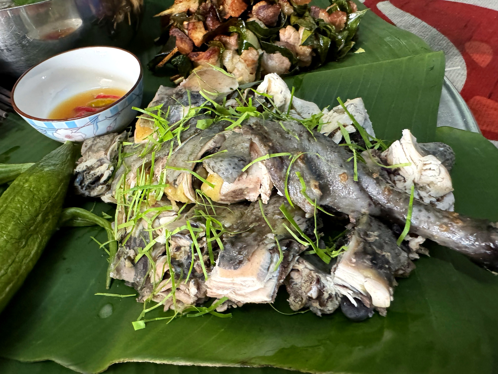
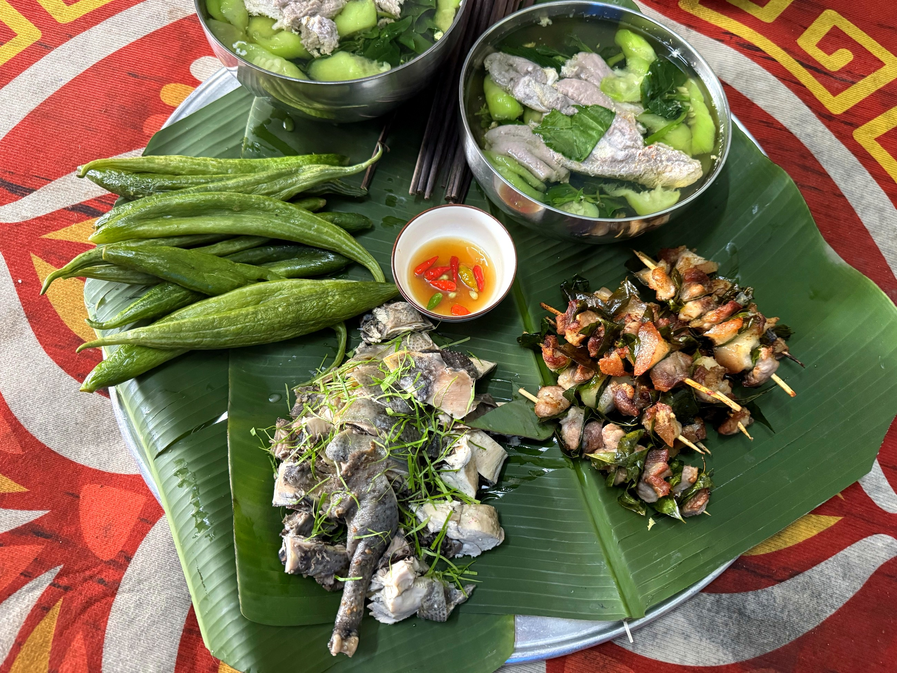

Loại hìnhTypeType
Ẩm thực · đặc sảnLocal Cuisine · SpecialtiesGastronomie Locale · Spécialités

Nhà Niệm Nga là điểm giao thoa thú vị giữa nghề nuôi ong truyền thống và văn hoá sen của vùng đất Mỹ Đức. Bà Vũ Thị Nga và gia đình gắn bó với nghề nuôi ong lấy mật từ nhiều năm nay, cho ra dòng sản phẩm mật ong An Phú – loại mật được thu hoạch tự nhiên từ vùng hoa đồng quê và hoa sen đặc trưng của địa phương.
Cùng với mật ong, gia đình còn khai thác giá trị nhiều mặt của cây sen: từ trà sen ướp hương truyền thống, hạt sen, tâm sen đến lá sen – những sản phẩm mang hương vị và văn hoá ẩm thực đặc trưng của người Mỹ Đức.
Đây là điểm dừng chân lý tưởng để tìm hiểu về nghề nuôi ong, trải nghiệm hái sen theo mùa, thưởng thức trà sen thơm ngát và mang về những món quà bản địa có giá trị từ chính vùng đất Mường Cốc.
Niem Nga House is an intriguing intersection of traditional beekeeping and the lotus culture of My Duc. Mrs. Vu Thi Nga and her family have been dedicated to beekeeping for many years, producing the An Phu honey product line – honey naturally harvested from local wildflowers and the region's distinctive lotus flowers.
Beyond honey, the family also harnesses the multifaceted value of the lotus plant: from traditional scented lotus tea, lotus seeds, and lotus plumules to lotus leaves – products embodying the distinctive flavors and culinary culture of My Duc.
This is an ideal stop to learn about beekeeping, experience seasonal lotus harvesting, savor fragrant lotus tea, and bring home valuable local gifts directly from the land of Muong Coc.
La maison Niệm Nga est un point de rencontre intéressant entre l'apiculture traditionnelle et la culture du lotus de la région de Mỹ Đức. Mme Vũ Thị Nga et sa famille sont attachées à l'apiculture depuis de nombreuses années, produisant la gamme de produits de miel An Phú – un miel récolté naturellement dans les fleurs sauvages et les fleurs de lotus caractéristiques de la région.
Au-delà du miel, la famille exploite également la valeur multifacette de la plante de lotus : du thé au lotus parfumé traditionnel, des graines de lotus et des germes de lotus aux feuilles de lotus – des produits incarnant les saveurs et la culture culinaire distinctives de My Duc.
C'est une halte idéale pour découvrir l'apiculture, expérimenter la récolte saisonnière du lotus, savourer un thé au lotus parfumé et rapporter de précieux cadeaux locaux directement de la terre de Muong Coc.
| Thưởng thức mật ong An PhúTaste An Phú honeyDégustez le miel d'An Phú | Nếm thử mật ong tươi từ đàn ong địa phươngTaste fresh honey from local bees.Dégustez le miel frais des abeilles locales. |
| Trà sen và sản phẩm senLotus tea and lotus productsThé et produits de lotus | Trà sen ướp hương, hạt sen, tâm sen, lá senSavor aromatic lotus tea, featuring lotus seeds, plumule, and leaves.Savourez un thé au lotus aromatique, avec des graines, des germes et des feuilles de lotus. |
| Trải nghiệm hái senThe Art of Lotus PickingL'art de cueillir le lotus | Ra đầm sen, hái hoa và quả sen (theo mùa, đặt trước)Visit the serene lotus pond to pick lotus flowers and fruits (seasonal, by prior arrangement).Visitez le paisible étang de lotus pour cueillir des fleurs et des fruits de lotus (saisonnier, sur réservation). |
| Làm trà senCrafting Lotus TeaPréparation du thé au lotus | Quan sát hoặc tham gia ướp trà sen thủ côngObserve or join in the artisanal process of infusing lotus tea.Observez ou participez au processus artisanal d'infusion du thé au lotus. |
| Mua sắm đặc sảnSpecialty shoppingAchats de spécialités locales | Mật ong, trà sen, hạt sen đóng gói làm quàDelightful packaged honey, lotus tea, and lotus seeds – perfect souvenirsMiel, thé de lotus et graines de lotus emballés – de parfaits souvenirs |
| Đón khách đoànGroup WelcomeAccueil de groupes | Phục vụ nhóm và đoàn tham quanCatering to Groups & ToursService pour groupes et visites guidées |


Nhà Niệm Nga hướng tới xây dựng thương hiệu Mật ong An Phú và Trà sen Mường Cốc thành sản phẩm đặc sản địa phương có giá trị cao, gắn với câu chuyện nguồn gốc và văn hoá bản địa. Hoạt động du lịch đóng vai trò kênh trải nghiệm và phân phối trực tiếp, góp phần tăng thu nhập cho gia đình và quảng bá sản phẩm của vùng đất Mỹ Đức. Điểm đến Du lịch cộng đồng Mường Cốc, Xã Mỹ Đức – Thành phố Hà NộiNiem Nga's house aims to build the brands Mat Ong An Phu (An Phu Honey) and Tra Sen Muong Coc (Muong Coc Lotus Tea) into high-value local specialty products, linked to their origin stories and indigenous culture. Tourism activities serve as a direct experience and distribution channel, contributing to increased family income and promoting the products of the My Duc region. Muong Coc Community-Based Tourism Destination, My Duc Commune – Hanoi City.La maison de Niệm Nga vise à développer les marques Mật ong An Phú et Trà sen Mường Cốc en produits de spécialité locale de grande valeur, liés à leurs histoires d'origine et à la culture autochtone. Les activités touristiques servent de canal d'expérience et de distribution directe, contribuant à l'augmentation des revenus familiaux et à la promotion des produits de la région de Mỹ Đức. Destination de Tourisme Communautaire Mường Cốc, Commune de Mỹ Đức – Ville de Hà Nội.